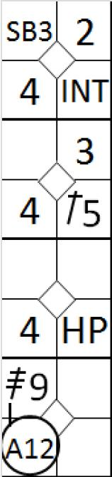
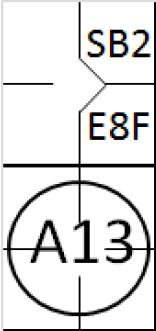
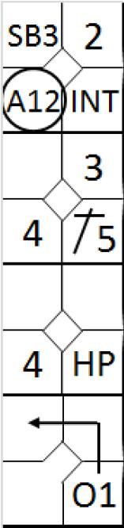
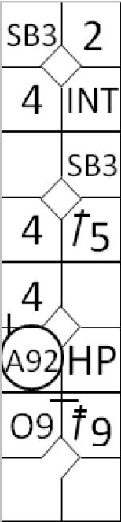
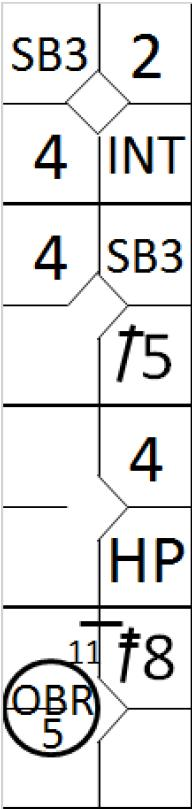

Exemple 11 :
Avec un retrait et les bases pleines, le quatrième batteur frappe un ‘home run’.
Exemple 11 :
Avec un retrait et les bases pleines, le quatrième batteur frappe un ‘home run’.
Jeux d’appel contre des batteurs qui ont frappé un double, un triple ou un home run.
Règle 5.08(a) des règles officielles du Baseball ‘OBR’, "Comment une équipe marque des points" l’ execption : Le point n’est pas alloué même si le coureur touche la plaque de but si le troisième retrait du jeu est effectué aux dépens :
(1) du batteur coureur avant qu’il ne touche la première base ;
(2) d’un coureur lors d’un jeu forcé ;
(3) d’un coureur précédent qui est déclaré retiré parce qu’il n’a pas touché une des bases.
Exemple 11 :
Avec un retrait et les bases pleines, le quatrième batteur frappe un ‘home run’.
Avant que le lanceur n’effectue son premier lancé sur la batteur suivant, il relaye la balle au défenseurd de la première base qui fait appel sur la première base en indiquant que le batteur-coureur n’ap pas touché la première base.
L’appel est accepté par l’arbitre, et le batteur est rétiré.
En conséquence de cet appel, le point compté par le batteur qui a frappé le ‘home run’ est retiré, mais les autres points restent valide.
 Exemple 12 : Avec un retrait et les bases pleines, le quatrième batteur frappe un ‘home run’. L’appel est fait sur le marbre.
L’appel est confirmé par l’arbitre et le batteur-coureur est retiré sur le marbre. En conséquence, le ‘home run’ n’est pas valide et le batteur-coureur est crédité d’un triple.
Les trois autres points sont valides.
 Exemple 13 : Ave deux retraits et un coureur srur la deuxième basen le batteur frappe un ‘home run’. Pendant qu’il cour sur les bases, le batteur-coureur ne touche pas la première base. L’arbitre donne une nouvelle balle qu lanceur, et avant que le premier kancer ne soit fait sur le abtteur suivant, l’équipe défensive fait appel contre le batteur-coureur sur la première base.
L’appel est retenu et le batteur-coureur est retiré sur la première base. Le point marqué par le coureur qui était sur la deuxième base est alors invalidé.
Important : Dans le cas ou deux joueurs sont retirés et que le frappeur d’un ‘home run’ avec des coureur sur bases est retiré sur appel pour avoir omis de toucher une autre base que la première base, l’arbitre peut alors accordé les points marqués par les coureurs qui ont touché le marbre avant que le batteur n’est touché la base ou l’appel a lieu. Le scoreur doit accordé des points qui sont validé par l’arbitre.
NOTE : Quand le frappeur d’un ‘home run’ est retiré sur un appel pour ne pas avoir touché le deuxième ou la troisième base, il est crédité soit d’un simple ou d’un double.
Pour conclure, lorsqu’un batteur frappe un ‘hit’ est retiré sur appel pour ne pas avoir touché une base, la dernière base qu’il a légalement touchée détermine la valeur de son hit.
Ainsi, s’il est retiré pour ne pas avoir touché le marbre il est alors crédité d’un triple ; pour ne pas avoir touché la troisième base il obtient un double, sur la seconde base un simple, et s’il ne touche pas la première base il n’est crédité d’un ‘hit’.
 Exemple 14 :
Avec aucun ou un retrait et les bases pleines, le batteur
frappe un ‘Home run’
Exemple 14 :
Avec aucun ou un retrait et les bases pleines, le batteur
frappe un ‘Home run’
En respectant les règles définies dans les règle officielles du baseball (OBR), la défense fait appel contrre le coureur qui était en troisième base parce qu’il n’a pas touché le marbre.
L’appel est recevable et, en conséquence, le coureur qui était en troisième base est retiré et son point est annulé.
En conséquence de cet appel, trois points sont marqué, et tous sont déclaré comme des ‘RBI’ pour le batteur. Les avances des coureurs sont décalrés légales.
Les conséquences sont identiques qquand, avec moins de deux retraits, les bases pleines, un coureur qeulconque est retrié sur appel pour ne pas avoir touché une base dans sa course.
NOTE pour les exemple 14 et 15 : Lorsque un appel est recevable parce qu’un coureur ne touche pas un base alors qu’il n’était pas forcé d’avancer sur cette base, le batteur doit être crédité avec la valeur de son ‘hit’, et bien évidemment, le coureur est retiré dans tous les cas.
 En regard au cas donné dans cet exemple, en application de la règle 9.05(b)(2) des règles officielles du baseball qui dit que : ‘ Le scoreur officiel ne doit pas accorder de coup sûr quand … un batteur frappe apparemment un coup sûr et qu'un coureur forcé de courir parce que le batteur est devenu coureur, est retiré sur appel pour ne pas avoir touché la première base vers laquelle il courrait. Le scoreur officiel créditera une présence à la batte mais pas de coup sûr ’, noteras un retrait pour le coureur et un choix défensif (Balle occupée) pour le batteur-coureur.
Exemple 15 : Avec un retrait et bases pleines, le quatrième batteur frappe un triple.
La défense fait appel contre le coureur qui était sur la troisième base parce qu’il n’a pas touché le marbre. L’appel est recevable, le premier point marqué est invalidé, et le coureur est retiré.
En conséquence de cette appel, le nombre de points marqué est réduit à deux, les deux points des autres coureurs qui ont avancé sur la frappe du batteur qui a fait un triple. Les avances faites par ces coureurs sont légales.
L’action du batteur-coureur est noté comme un choix défensif (O1), en accord avec les règles officielles du baseball 9.05(b)(2). Il faut noter aussi que si un autre coureur avait été retirer, cela aurait eu le même effet sur le batteur-coureur.
 Exemple 16 : Avec un retrait et les bases pleines, la quatrième batteur frappe un triple.
La défense fait appel contre le coureur qui était en première base en motivant le fait qu’il n’a pas touché le marbre. L’appel est recevable et en conséquence le dernier point marqué est invaluidé et le coureur qui est concerné par cet appel est retiré.
Du fait de cet appel, le nombre de points marqué est réduit à deux, ceus des autres coureurs qui ont profité du triple frappé par le batteur. Toute les avances des coureurs sont légales.
L’action du batteur est notée avec un double, suivi d’un choix défensif pour indiqué qu’il a atteind la troisème base [OBR 9.06(b) Commentaire] .
 Exemple 17 :
Avec deux retraits et des coureurs sur le première et troisième
b
ase, le batteur frappe un double
, ce qui permet aux deux coureurs de marquer un point.
Exemple 17 :
Avec deux retraits et des coureurs sur le première et troisième
b
ase, le batteur frappe un double
, ce qui permet aux deux coureurs de marquer un point.
Avant le premier lancer sur le batteur suivant, le lanceur relaye la balle au défenseur de la troisème base et ce défenseur fait appel contre le coureur qui parti de la première base et qui n’a pas touché la troisième base. L’appel est recevable et en conséquence le coureur est retiré.
Seul le premier point est valide, celui qui est entré sur la frappe, et le batteur-coureur est crédité d’un simple ‘hit’ .
Un choix défensif sera noté pour indiqué qu’il a atteind la deuxième base.
 Exemple 18 :
Ave dexu retraits et les bases pleines, la btteur frappe un ‘home run’.
Exemple 18 :
Ave dexu retraits et les bases pleines, la btteur frappe un ‘home run’.
Avant que le coureur qui était sur la première base ne puisse toucher la troisième base, il est dépasssé par le batteur-coureur. Le batteur-coureur est alors retiré en accord avac la règle 5.09(b)(9) des règles officiels du baseball.
Deux points sont neanmoins marqués, la deuxième base est accordée au coureur qui était en première base et le batteur coureur se voit attribué un double et un retrait automatique.
 Exemple 19 : Si, toutefois, le batteur-coureur est retiré avant que le coureur qui était en deuxème base ne puisse atteindre le marbre, alors un seul point est marqué, puisque le coureur en deuxième base atteind le marbre après le troisième retrait.